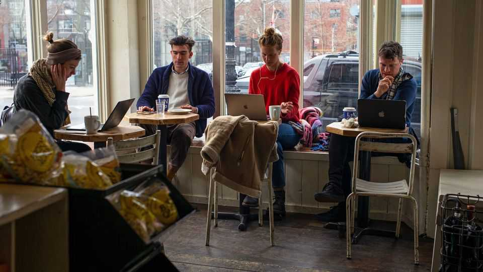
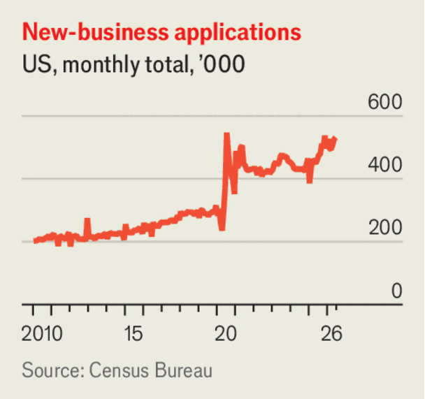

America’s startup boom offers hope for the future of work
AI could make more people their own boss

Jul 30th 2026
MANY AMERICANS long to be their own boss. Their yearning is as old as the Republic itself: Thomas Jefferson thought the ideal citizen was a yeoman farmer, whose economic independence allowed him to participate in civic life. For decades, 60% of Americans have said they want to be self-employed. Yet in recent years fewer than 10% have been.
That is now changing. As we report, America is in the midst of a small-business boom. It began during the covid-19 pandemic and has since picked up steam, fuelled by artificial intelligence, low hiring and the growing ease of starting small online shops on platforms such as Etsy, Shopify and TikTok Shop. In June the Census Bureau recorded more than 531,000 new business applications, a rise of 81% compared with the average month in 2019. Such factors have buoyed self-employment in Britain and France, according to Stripe, a payments firm. But it is America where the trend is most pronounced. It is a welcome one.
Small businesses are popular with politicians, but economists can turn up their noses. Many fail. Those that survive often suffer from low productivity: small American firms are only 70% as productive as big ones. In recent years much innovation has come from large “superstar” firms. Small companies often lack the digital tools and administrative efficiency that come with scale.
Yet there are signs that AI can help small businesses become more sophisticated, even as it automates away some jobs with big employers. Basic chatbots can help firms register with local authorities, draft business plans and market themselves to clients. AI agents can carry out repetitive administrative tasks and make sense of sales trends and other data. Many of America’s new businesses are one-man bands, categorised by the government as unlikely to hire within their first few years of operation. They may be able to scale up anyway, using AI agents instead of employees.

All this raises the tantalising prospect that self-employment could provide meaningful alternative work for some who lose their jobs to ai. Gloomy futurists in Silicon Valley warn that AI will create a “permanent underclass” of people who own little capital and, with the professional classes displaced, perform only menial jobs. A more hopeful possibility is that the technology democratises the ability to put ideas into practice and become a successful business owner. There are some signs of such an effect: a rising share of new entrepreneurs are low-income, according to Bank of America.
True, becoming a “solopreneur” will provide neither the manufacturing jobs craved by populists nor a predictable 9-5 office life and a corporate ladder. The new startups are mainly services firms, many in tech, retail or health care. But, when asked, their founders say they are happy with service work. It is an encouraging precedent that many of these new businesses have sprung up in places formerly hollowed out by the loss of manufacturing. Shopify reckons that the share of new businesses from rural areas has been rising.
The government could make life easier still for entrepreneurs. Although Obamacare, a health-care reform in the 2010s, helped, it is often still too hard for self-employed Americans to access health insurance. Employees should not have to cling to their jobs to stay covered. And swathes of the economy suffer from burdensome occupational-licensing requirements, which act as a barrier to entry for anyone looking to set up shop. They should be pared back.
Nobody knows how AI will reshape work, but across-the-board pessimism is unwarranted. An economy powered by individual entrepreneurship, with AI handling tedious back-end tasks, could yet prove fulfilling and lucrative for many people. It might even help more Americans realise Jefferson’s vision of self-reliance as a path to liberty. ■